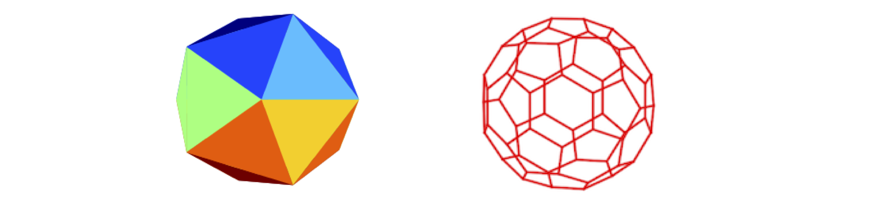

Numbers to Algorithms.¶
# import all python add-ons etc that will be needed later on
%matplotlib inline
import numpy as np
import matplotlib.pyplot as plt
from sympy import *
init_printing() # allows printing of SymPy results in typeset maths format
plt.rcParams.update({'font.size': 16}) # set font size for plots
1 Symbols and basics¶
When you learn mathematics, it is normal to use \(x\) and \(y\) to do most of the algebraic manipulations. In science, \(x\) and \(y\) are almost never used and this simple change can make a simple equation look complicated. This is something that you just have to get used to, but is made easier if you think what the variables mean; then perhaps you will be confident, say, to differentiate with respect to temperature \(T\) rather than feeling that this can only be done with variable \(x\). How ingrained using \(x\) and \(y\) are, is not, however, to be underestimated, for even experienced practitioners will on occasion revert to these when faced with a difficult calculation.
1.1 Equations¶
There is one fundamental rule for manipulating an equation and that is to make sure that whatever is done to one side is done to the other. The equality\(^1\) sign = means that the left-hand side of any equation is always equal to the right; for example the ideal gas law equation
means that the product of pressure \(p\) and volume \(V\) is always equal to the number of moles multiplied by the gas constant \(R\) and the temperature \(T\). To isolate the pressure on the left-hand side, both sides of the equation must be divided by the volume,
which is then canceled through on the left giving \(p = nRT/V\). To avoid making mistakes, the best approach is to do any manipulations step by step even if they seem trivial. Repeating a calculation because a slip has been made in an earlier step takes far longer than it does being thorough at each stage.
\(^1\) The = sign was probably first used by Robert Recorde in an algebra textbook of 1557.
1.2 Multiplication and division¶
Slightly different notations are used when mathematics is written by hand, printed in a book, or interpreted by a computer language. One instance is the different symbols used to indicate multiplication; for example, multiplying together three quantities can be written as \(pqr,\; p \times q \times r,\; p \cdot q \cdot r\) or \(p. q. r\). In the last two examples, the point could be confused with a decimal point if numbers were involved of if vectors as the dot product, see chapter 6.
In most computer languages, including Python used in this text, multiplication is indicated by the symbol, *, for example, \(\mathtt{a*b}\). Raising a number to a power is written as \(\mathtt{p**3}\) or \(\mathtt{p**(1/3)}\) for the cube root.
In mathematics, the brackets (), {}, [ ] are each used to indicate multiplication, and if an equation dictates that brackets must be nested then different ones may be used for clarity. In a computer language, different brackets are usually used to indicate different types of arrays or functions, but exactly which is used depends on the language.
Each term inside a bracket, is multiplied by any terms outside; for example in mathematical notation,
If a bracketed expression is multiplied by itself then this is written as, for example, \((a-d)^2 =(a-d)(a-d)=a^2 - 2ad + d^2\).
In Python and other languages, \(a(b - c)\) would be written as \(\mathtt{a*(b - c)}\). The reason for the multiplication sign is that one or more letters, such as \(a\), followed by a bracket could indicate a function, array, vector, or matrix. Which one depends on how the name, in this case, \(a\), was defined.
In printed equations, division is sometimes ambiguous because it is not clear what is to be divided; for example, \(a/bc\) can mean \(\displaystyle \frac{a}{bc}\) or \(\displaystyle \frac{a}{b} c\), which is \((a/b)c\); it depends on the convention being used as to which operation takes precedence. The safest way, although a little clumsy, is to write \(a/(bc)\), making it clear that \(a\) is divided by \(bc\). In Python and other computer languages, \(a/b*c\) means \((a/b)*c\), so adding brackets is essential to get the calculation you expect.
1.3 Approximation: never do this in the middle of a calculation¶
Truncating numbers in the middle of a calculation is an easy way to introduce numerical errors, the final result only should be rounded and if it related to an experimental value then the extent of this will be determined by the standard deviation or uncertainty in the value. In some calculations a similar type of approximation can be made algebraically, but this is also risky.
Sometimes when one variable is small compared to another it can be ignored. The expansion of the exponential is one such case where this is legitimate;
The terms \(2!\) and \(3!\) are factorials; \(3!=3\times 3\times 1\) and similarly for other numbers. Suppose that \(x\) is small compared to \(1\) then \(x^2\) is very small and \(x^3\) tiny, then it is possible to approximate \(\displaystyle e^{-x} \approx 1 - x\) and this is valid. However, to do this in the middle of a calculation is invariably fatal. Take a simple example, in the expression
suppose that \(x\lt N\). It would be wrong to make this \(\displaystyle y = x+\frac{N}{2x}\) by arguing that as \(x^2\) is much less than \(N\), it can be ignored, because when it is expanded out the expression becomes
and no comparison of the relative sizes of \(x\) and \(N\) is possible.
1.4 Assignments in Python and other computer languages.¶
In Python when something has to be calculated, it can be typed directly for example, \(\mathtt{2.5*6}\); or \(\mathtt{np.sin( np.pi/6 )}\) where the prefix \(\mathtt{np.}\) tells Python to use the numpy numerical library. (This has to be loaded initially, see the header to this page or the appendix on using Python ). The result can be see by printing to the screen as \(\mathtt{print(np.sin( np.pi/6 ) )}\).
However, if the result is needed later on, then the calculation must be assigned a name. This name could be almost anything but is usually a letter and numbers, \(\mathtt{f01,\, result3}\) and so forth, but not a name such as \(sin,\, log\) etc. as these are reserved names. The assignment operation is the equal symbol = , so, \(\mathtt{thesine= np.sin(np.pi/6)}\) would produce \(\mathrm{\sin(\pi/6)}\) every time \(\mathtt{thesine}\) is typed; thus, \(\mathtt{6*thesine}\) is the same as \(\mathrm{6 \sin(\pi /6)}\). The assignment does not produce an equation; it makes the name on the left of the = sign produce the calculation shown on the right. Thus a statement such as
is acceptable but not \(\mathtt{eqn1 = x**2 + 3*x = 2}\). Details of Python syntax are given at the end of the book. Because many different symbols are used in maths, and some only infrequently, these are listed in the Glossary with their meanings, also at the end of the book
1.5 Functions¶
The equation \(y = 1/x\) may be written in functional form as \(f(x) = 1/x\), thus, if \(x = 2\) the function has the value of 1/2, or \(f(2) = 1/2\). The function operates on its argument \(x\), which here is \(2\), to produce its reciprocal. The \(x\) in the function, either as its argument or in the body of the function is, however, simply a symbol, and is arbitrary; it is the algebraic expression or operation itself that determines what happens. Therefore, writing \(f(w) = 1/w\) is entirely the same as \(f(x) = 1/x\); if a function is evaluated with a series of numbers then it does not matter whether \(w\) or \(x\) was used to represent the mathematical operation; the result is the same. Similarly, as \(x\) is only symbolic, it is possible to write a composite function where the argument is itself a function; e.g. \(f (x^2) = 1/x^2\) or \(f (e^x) = 1/e^x\), which means that the function \(f\) operates on \(x^2\) or \(e^x\) to produce its reciprocal. Formally, this would be written as \(f[g(x)] = 1/g(x)\) where \(g(x)\) is the ‘inside’ function.
You can consider a function to be a rule that converts \(x\) or \(w\), or whatever symbol is convenient to use, into some other mathematical form. You can also consider it as a mapping that transforms \(x\) into a new form. The function ‘log’ follows the rules to make the log of a number, and is written as \(f(x) = \ln(x)\), and formally the range \(x \ge 0\) should be added, but usually this is assumed to be known. A different example is illustrated by the functions used to find the real and imaginary part of a complex number. Complex numbers \(z\) have two parts; the ‘real’ and the ‘imaginary’, which is multiplied by \(i =\sqrt{-1}\); for example, \(z = 2 + 3i\), see Chapter 2. The real function is written \(f(z) = Re(z)\) and the imaginary function \(f (z) = Im(z)\) and if \(z = 2 + 3i\) then \(Re(z) = 2\) and \(Im(z) = 3\).
While some functions are ‘even’ and others ‘odd’, many are neither. ‘Even’ functions have the property that they do not change sign when their argument changes sign, \(f(x) = f (-x)\), but ‘odd’ functions do change sign \(f (x) = -f(-x)\); \(x^2\) is an even, \(x^3\) an odd function. A function’s odd or even properties are very useful in evaluating integrals.
Inverse functions also exist, which means that if a function \(f(x)\) changes \(x\) to something else then the inverse function \(f^{-1}(x)\) changes it back. Suppose that the function \(T_F\) changes temperature in degrees centigrade (\(^{\text{o}}\)C) to Fahrenheit (\(^{\text{o}}\)F), \(T_F(C) = 9C/5 + 32\); the inverse, \(T_C\), takes \(^{\text{o}}\)F and converts it into \(^{\text{o}}\)C as \(T_C(F) = 5(F - 32)/9\). This last function could be written as \(T_F^{-1}\)(F) because it is the inverse function. Finding the inverse function can be quite involved and is described in Section 1.6.
To summarize, a function transforms its argument into some other mathematical object, which can be of almost every possible type. The principle is the same whether the function produces the reciprocal, or square or an integral or a series and so forth. The function may also be called a transform, an operator, or a mapping of the argument (\(x\)) onto some other object.
1.6 Functions in Python¶
In Python and other languages, a function has a particular syntax that is related to that used in mathematics, but with some important differences. A function is first defined using an assignment statement, then, when used it has a pair of brackets added to it. The function \(f(x)= 2x+3x^2\) is defined in Python as
and this is called a ‘lambda’ function and used as when the code can be placed on a single line. It is used as f(2) which returns a value of 16 etc. If the function has two arguments then this is written as for example \(f = \text{lambda x,y}: 2*x+3*y**2\).
The other type of ‘function’ is a sort of subroutine, to give it an old fashioned name, and has the form
\( \mathtt{def\;\; afunc( x, y ):}\)
\(\quad \mathtt{a= 2*x+3*y**2}\)
\(\quad \mathtt{return\;\; a}\)
and is used as
\(\mathtt{result= afunc(2,3) }\)
1.7 Algorithms¶
There is no one definition of an algorithm. We can consider this as a logical, fixed set of rules for solving a problem that may or may not be mathematical. Starting with a known set of initial conditions, an algorithm proceeds to some other known set of conditions that ends the process and does so in a finite number of steps. A game could be considered to follow an algorithm in that it follows a fixed set of rules and starts and ends in a definite way. An algorithm could be the sequence of operations undergone to determine the rotation, reflection, and other symmetry properties of a molecule, or it could simply be the steps producing an algebraic or numerical calculation. This leads to a more restrictive and more common definition of an algorithm as a series of instruction with which to perform a calculation on a computer.
1.8 Numbers¶
So familiar are numbers and counting that we hardly give them much thought and automatically use different types of numbers and ways of counting as the situation dictates. Integer numbers are either prime, when the number is only divisible by itself and 1, or composite and the product of two other integers. Besides the positive and negative integers, there are the rational numbers or fractions, generated from their ratios, \(n/m\), such as \(1/2,\, 2/3\), etc. A fraction is called proper when the numerator is less than the denominator, \(2/3\) for instance, and a fraction improper if the numerator is greater.
It is common to express fractions as decimal expansions such as \(0.500\), or \(1.36348 \cdots\) etc., which are called real numbers. In some countries, real numbers are expressed with a comma \(0,500\) or \(1,36348\) instead of a decimal point, and the comma is the international system of units (SI) recommended symbol, although it is never used in the English-speaking world.
In fractions, such as \(98/77\), there are repeats of the sequence of digits; this fraction has a \(2\) digit repeat and is \(1.272727 \cdots\) while \(98/78 = 1.256410256410 \cdots\) has a 6 digit repeat. The irrational fractions can also be expanded in decimal notation, \(\sqrt{2} \approx 1.4142135 \cdots\) , however, the sequence of digits does not repeat itself.
The decimal numbers, as the name implies, use a base of \(10\) for counting, however, we are also quite happy using other counting systems; base \(60\) to count time, with \(60\) seconds in a minute and \(60\) minutes in an hour, as well as base \(12\) or \(24\) for counting the hours. Angles such as latitude and longitude, essential for navigation, are based on the \(360^\text{o}\) of a circle with the degrees each split into \(60\) minutes and then into \(60\) seconds of arc. Engineers used to use grads, which divide the circle into \(400\) parts, and perhaps some still do. In measuring weights, the old Imperial units, pounds (lb) and ounces (oz), where \(16\) oz = \(1\) lb and \(14\) lb = \(1\) stone are still used, although this is being replaced by the decimal units based kg and g. Distances in the UK and in North America are measured in miles, an arbitrary measure of \(5280\) ft, based on a yard of \(3\) ft with each foot containing \(12\) inches, although the km, m, and cm are replacing these older measurements. Eight km is approximately \(5\) miles and \(1\) inch \(\equiv 25.4\) mm. A distance of \(3\) yards, \(1\) ft and \(4\) inches is often written as \(3,\, 1'\, 4''\) and a similar notation used for degrees, minutes, and seconds of arc, \(25^\text{o}\, 12''\, 3''\).
Because computers are now so fast in performing calculations, it is almost never necessary to write code at the binary level, which is base two. Binary means calculating at the bit and byte level; the numbers used are \(0\) and \(1\) only. In octal, numbers based on \(0\) to \(7\) only are used and in hexadecimal numbers are on base \(16\). These are chosen by convention to have the numbers and letters, \(0, 1, 2, 3, 4, 5, 6, 7, 8, 9, A, B, C, D, E, F\). Thus \(10\) in decimal is \(A\) in hexadecimal, \(15\) in decimal is \(F\) in hex and \(16\) in decimal is \(10\), pronounced as ‘1 zero’, in hex.
It is not difficult to do arithmetic in hexadecimal, just awkward because we are so used to decimals and often change to decimal to do the calculation and convert back, this being easier than learning the hexadecimal multiplication table. Hexadecimal arithmetic is used only rarely now as programming a computer is usually done at a high level. Once ‘hex’ was necessary not only to get speed in a calculation on a computer using words \(16\) bits wide, but also to ‘talk’ to an external instrument via pulses generated by repeatedly sending a \(1\) or \(0\) to a certain address that is then mapped onto the pins of an output socket on the computer. The table shows a comparison of different number systems in the order top to bottom, decimal, octal, hexadecimal, and binary. In section 10 describing modulo arithmetic an algorithm for converting from decimal to other bases is described.

2 Integers, real, and irrational numbers¶
Integers are the numbers that are colloquially called whole numbers, \(-2, 0, 3\), etc. and they extend from minus infinity to plus infinity; \(-\infty\) to \(+\infty\) and although there is an infinity of them they are what mathematicians call countable. Integers are clearly not the only numbers as we are familiar with the real numbers such as \(1.2,\, 3.56\), and so on, of which there is also an infinite number, but many, many more than there are integers. If two different real numbers are chosen, an infinite number of others can be squeezed in between them simply by adding more decimal places; this and other interesting discussions on numbers and algorithms are explained clearly in ‘The Emperor’s New Mind’ (R.Penrose publ. 1990 Vintage OUP). Surprisingly, real numbers can usually be reduced to a rational fraction which is a ratio of two integers, e.g. \(0.751 = 326/533\), but, for some numbers, \(\pi,\, e, \sqrt{2}\) there is no ratio of integers that will accurately form the number and they are called irrational, i.e. not being logical! You may recall that \(\pi \approx 22/7\) , which would seem to contradict this statement, but \(22/7\) is a very poor approximation to \(\pi\), only accurate to three digits, \(355/113\) is better but only to seven digits.
When you use a computer to perform calculations, a distinction is made whether a real or integer number is used. This is a common feature of programming languages and also in computer algebra, for example, the integer division \(2//3\) is exact and in Python (notice the //), it remains in the calculation as such. In other languages integer division can result in the answer \(2/3 = 0\) rather than \(0.666^.\) or remaining as an exact ratio so this has to be checked carefully.
We look next at some of the irrational numbers as their calculation has fascinated mathematicians over the centuries and they allow us to use some interesting geometry and to write some algorithms.
2.1 Pi (\(\pi\) ) and an algorithmic way of calculating its value¶
Whole books have been devoted to the number \(\pi \approx 3.1415926\), such as The Joy of Pi (Blatner 1999), and calculations performed to study the pattern of its digits, which now extend to many thousands of millions of decimal places. As far as is known, the pattern of digits does not repeat itself; if they did it would mean that \(\pi\) could be written as a fraction of two whole numbers and would no longer be an irrational number. \(\pi\) is also a transcendental number, which is one that is not the solution (we say root) of any polynomial equation, and it is not considered to be algebraic; it transcends algebra and this guarantees that it is irrational.
Approximations to \(\pi\) are \(22/7,\; 355/113, \; 52163/16604\) and many others. The scientist James Jeans used a sentence to remember the first 15 terms; ‘How I want a drink, alcoholic of course, after heavy chapters involving quantum mechanics’ where the length of each word represents a digit.
\(\pi\) appears naturally in many algebraic formulae that have no obvious geometric interpretation. Some estimations involve summing series, others dropping needles across a square grid (Buffon, 1707-1788), and yet others, going back at least to Archimedes, measure either the length of one polygon that is just larger, or one that is just smaller, than a circle. The proof of this method is very elegant and leads us in a direction that is not obvious before coming to its conclusion. We shall follow it through and then write an algorithm with which to calculate \(\pi\). We consider ourselves to be advanced and modern, but looking at the subtlety in this and other proofs, we soon realize how brilliant were those who initially worked them out.
Figure 1. The hexagon has a side of length DB = \(a_1\) the dodecagon CB = \(a_2\).
To calculate \(\pi\), the idea is first to draw a circle and then place a square inside this touching its circumference. Next, a pentagon, hexagon, and ‘n-agons’ are drawn in the same way, and as the number of sides gets larger, the closer the straight-sided polygon will get to the circumference of the circle. And, if another polygon is drawn just outside the circle, then the two values of the polygons’ circumferences define upper and lower bounds to the value of \(\pi\). However, actually drawing these polygons on a piece of paper, or the computer, is not necessary as geometry and algebra can be used. This was how the first calculation of an accurate value of \(\pi\) was achieved, and furthermore, to 15 decimal places, and was described by the Iranian astronomer Jamshid al-Kashi in 1424 in his book ‘A Treatise on the Circumference’.
The calculation starts by sketching a hexagon in the circle, then a 12-sided figure (a dodecagon). Just one segment of each is shown in Figure 1. The drawing need not be very accurate and only represents the shapes. Geometry is used to assert their true shapes.
Figure 1 shows the straight edge of one piece of the hexagon, DB = \(a_1\) and a dodecagon CB = \(a_2\). The plan al-Kashi had was to find \(a_1\) and then to determine \(a_2\) in terms of \(a_1\) and then continue to a ‘24-gon’ and find the length of one of its segments, calling this \(a_3\), which is known in terms of \(a_2\) and so on. By adding up the lengths of polygons with more and more sides, better and better estimates of \(\pi\) are obtained.
It has been known since the time of Euclid, that for a triangle drawn in a circle the angle at the centre of a circle is twice that at the circumference; therefore, if \(\angle\) DAB is \(\theta\), then \(\angle\) DOB is \(2\theta\). An angle at the centre and circumference is shown in Figure 2:
Figure 2. The angle at the centre is twice that at the circumference.
Using this theorem also means that \(\angle\)ADB is a right angle, since if \(2\theta = 180^\text{o}\) then \(\theta = 90^\text{o}\) and \(\angle\)ACB is therefore also a right angle. You may also notice in Figure 1 that AD is parallel to OC, that \(\angle\)ADO is also \(\theta\) and that OC and DB are at right angles since the arc DC = CB and therefore OC bisects DB.
Now we can start the calculation of \(\pi\). Remember that we have to find \(a_2\) in terms of \(a_1\). To find \(a_1\) we have to find the length of one side of a hexagon, BD. But in a hexagon, the total length of the six sides is easily found since each segment, such as ODB is an equilateral triangle, \(2\theta = 60^\text{o}\), and if the circle has a radius of \(1\), then OA and OB = \(1\), since OC, OD and BD \(\equiv a_1\) thus, \(a_1 =1\).
The total length of the hexagon, which approximates \(2\pi\) the circumference of the circle, is \(6\) which produces the rather unimpressive value \(\pi = 3\); this can be vastly improved on. Al-Kashc’s brilliant reasoning is now outlined.
His method was to find a relationship between \(x_1\) (which is AD) and \(x_2\) (AC), and use this to find \(a_2\) (CB) knowing that \(a_1 = 1\) and to repeat this process for polygons with progressively larger numbers of sides. To find \(a_2\), two lines CZ and OY, are drawn that are, respectively, perpendicular to AB and AD as shown in Figure 3.
Next, convince yourself, for example by drawing them out, that the triangles ABC and ACZ are similar because their angles are similar. The angle ACB is \(90^\text{o}\) because an angle at the circumference is half that at the centre; see Figure 2, and AZC is also a right angle. Therefore the ratio of the sides AZ/AC is the same as AC/AB or as an equation AZ/\(x_2 = x_2\)/AB from which
the length AB being \(2\) because the radius of the circle is \(1\). Our task now is to find OZ.
The angles in triangles AOY and OZC are the same, see Figure 1, and the triangles are also the same size as both have the radius as their hypotenuse, AO and OC. Notice also that \(\angle\)AOY = \(90 -\theta\) and therefore bisects the angle \(\angle\)AOD making AY = YD and AY = \(x_1/2\) = OZ. Substituting for OZ produces
A relationship between the length \(x_1\) or \(x_2\) and \(a_2\) has to be found. Triangle ADB is right angled and as the hypotenuse is 2 (the diameter), using Pythagoras’s theorem is
and because \(a_1 = 1\) then \(x_1^2 = 3\). Using equation 3 produces \(x_2\) as
The dodecahedron value for \(\pi\) is calculated by using the right-angled triangle ACB to obtain \(a_2^22 = 4 - x_2^2\). Hence \(a_2 = 0.5177\), and as there are 12 sides to the dodecahedron and the circumference is \(2\pi\), we obtain \(2\pi = na_2\) or \(\pi = 12/2 \times 0.5177 = 3.106\). Not too bad a result and accurate to one decimal place, however, the calculation can be repeated, doubling the number of sides in each step.
Using pairs of equations, the parameter \(a_n\) becomes the approximation to \(\pi\), when multiplied by \(n\) the number of sides, e.g. using the value for \(x_2\) which is based on \(x_1\), then
The next approximation is
and so on making the \(i^\text{th}\) step, with a n-sided polygon
This calculation of \(\pi\) obviously means that Al-Kashi knew how to evaluate square roots. His method is written in Python as Algorithm 1, if you are not familiar with the syntax then look at the Python appendix now.
Figure 3. Geometric construction to calculate \(\pi\). (Not drawn to scale).
Any algorithm is a process or ‘machine’ used to arrive at an answer and starts by defining the parameters needed, then setting their initial values. A termination criterion has also to be defined to stop the calculation. The calculation is then performed step by step, repeating steps as necessary and the results printed as the calculation proceeds or just at the end as necessary. If the calculation involves repeated evaluations, as in this case, then a loop is needed to do this.
In the Python code, note that the equal symbol = while looking like an equality sign in mathematics does indicate an equation but rather that an assignment is being made; for example, the statement \(\mathtt{m= 20}\) means ‘set aside some space in the computer’s memory, give it the name \(m\), and when that name is called it will produce the number 20’.
The instruction \(\mathtt{for \;i\; in \;range(m):}\) starts a loop that repeats the calculation \(m\) times starting at zero, automatically incrementing the value of \(i\). In this example, this is done \(20\) times, which corresponds to using a \(6\) by \(226\)-gon which has \(402,653,184\) sides!
The results are reproduced here, but it is clear that the true value of \(\pi\) is being approached and the last approximate value listed is accurate to \(12\) decimal places.
# Algorithm. Al-Kashi's method of calculating pi
m = 20 # number of iterations
xa = np.sqrt(3.0) # initial guess for x
na = 6 # number of sided on polygon
print('{:d} {:s}{:10.8f}'.format( 0,'first guess ',3*np.sqrt(4 - xa**2 ) ) )
for i in range(m):
xb = np.sqrt( 2 + xa ) # new value of x
nb = 2.0*na
ab = nb/2.0*np.sqrt(4 - xb**2 ) # new estimate of pi
print( i+1, ab)
xa = xb # replace new for old
na = nb
pass # end loop
0 first guess 3.00000000
1 3.105828541230247
2 3.132628613281242
3 3.139350203046893
4 3.1410319508903672
5 3.1414524722853443
6 3.141557607912925
7 3.1415838921593586
8 3.1415904632784506
9 3.1415921058762954
10 3.141592515921144
11 3.1415926186407894
12 3.1415926346490446
13 3.1415926453212157
14 3.1415926453212157
15 3.1415923038117377
16 3.1415923038117377
17 3.1415868396550413
18 3.1415868396550413
19 3.1416742650217575
20 3.1416742650217575
An accurate value is \(\pi= 3.141592653589793\) and you can see that our algorithm approaches this value but then deviates and becomes incorrect with iterations above 15. Precision is always a consideration when calculating to many decimal places it does not mean that the algorithm is failing but that the precision in the arithmetic used by Python is limited to \(9 \to 10\) significant figures. There are ways to overcome this such as using the mpmath library to say \(50\) decimal place precision.
Al-Kashi repeated his calculation of \(\pi\) until its error was the same ratio as the width of a hair is to the size of the universe. From historians’ estimates of what was considered to be the size of the universe in the thirteenth century, this means that he calculated \(\pi\) to \(15\) decimal places, which is a genuinely extraordinary calculation and better in accuracy than our answer.
Such has been the fascination of \(\pi\) to mathematicians that there are many algebraic formulae which contain \(\pi\) and others with which to calculate it. Some examples are shown below.
In these and many other formulae producing \(\pi\), it is difficult to appreciate why \(\pi\) appears; some are far more efficient at calculating than the method described, but do not have the appeal of the geometric approach.
2.2 Square Roots¶
The square root is familiar as the solution to an equation such as \(n^2 = 3\). The square root is also the length of the diagonal of a square or rectangle and therefore has a geometric interpretation. The Pythagoreans discovered that the length of the diagonal of a square of unit side, i.e. length one, is \(\sqrt{2}\); see Figure 4. Although it is hard to imagine this today, this calculation caused a scandal since this number was not ‘pure’ in the sense that it was not the ratio of two whole numbers. And the scandal still echoes down the centuries. Numbers that are not the ratio of two whole numbers are called irrational or ‘un-ratio-able’, the Latin word ratio coming from the Greek for ‘logo’ which means ratio. We use the word logic to symbolize reason and it is still a pejorative statement to describe someone as being irrational.
The right-angled triangle does not of itself produce the value of \(\sqrt{2}\) very accurately, since the length of the line would have to be measured; it is more of a geometrical definition. The first calculation of a square root was made by the Babylonians (modern-day Iraqis), about four thousand years ago, and is inscribed in a clay tablet preserved at Yale University. A geometric method was used that could be converted into an algorithm. The result on the tablet was accurate to five decimal places and the calculation shows the Babylonians knew Pythagoras’s theorem about a century before Pythagoras discovered it. This result is remarkable, and it is possible that a formula was used similar to what is now called Heron’s method after the Alexandrian mathematician and engineer who lived about two thousand years ago; his dates vary from $150 \to 250 AD.
Figure 4 Unit right-angled triangle.
Suppose that \(N\) is the number for which the square root is sought, then let \(a\) be an estimate of this number and therefore we want an algorithm with which to find \(a\). Suppose that \(a_2\) differs from the true value \(N\) by an error \(\epsilon\); hence
The next step is to find a better approximation and instead of just randomly guessing a new value for \(a\), a small positive or negative number \(c\) is added. Now we suppose that \(a + c\) is the new and better approximation to the square root, therefore
Assuming that adding \(c\) makes the error we call \(\epsilon_c\) zero, by expanding the bracket, substituting for \(N - a^2\) and rearranging produces \(\epsilon = 2ac+c^2\). However, as \(c\) is small, then \(c^2\) is even smaller,\(^2\) and we will suppose we can ignore it and then \(c = \epsilon /2a\). Next we suppose that the approximation to the square root is \(a_1\) where \(a_1 = a+c\). Hence
Repeating the procedure gives \(a_2 = (a_1 + N/a_1)/2\) and then \(a_3,\; a_4 \cdots\) and so forth, and and will eventually produce \(\sqrt{N}\) after \(n\) iterations. It is implicitly assumed that this sequence will converge to a real number as the error \(\epsilon\) gets smaller.
To calculate \(\sqrt{2}\), then \(N = 2\), and starting with a poor initial guess of \(a = 1/2\), the steps where \(\epsilon\) is explicitly calculated are
After four steps, a value accurate to three decimal places is produced; the convergence is very rapid because of the \(a^2\) term in the equation.
Heron’s formula can also be described as an average, because if \(a\) is an estimate of \(\sqrt{N}\) then \((a + N/a)/2\) is the average of the number \(\sqrt{N}\) plus a small increment \(a\) and the value \(N/a\), which is less than \(\sqrt{N}\). This result is also produced from Newton’s method for approximating the roots of the equation, \(N + a^2 = 0\), see Chapter 3.
\(^2\) Making approximations is something that should not be done in the middle of a calculation. In this case its iterative nature effectively corrects for this, i.e. it is justified by leading to a formula that iteratively approximates the correct result.
The Babylonian root estimation process can be calculated as an algorithm. A ‘for’ loop is used to repeat the calculation, in this case seven times, although this number can easily be increased. The initial value is calculated as ‘aa’ (equation 6) and then updated in the loop as ‘ab’ Each time a the latest estimate of the root ‘aa’ replaces the older one ‘ab’. The accurate value is \(\sqrt{2}= 1.414213562373095\) and you can see that the algorithm rapidly converges to this value. Precision is not so critical in this calculation because unlike the calculation of \(\pi\) no functions such as the square root are needed, just simple arithmetic.
# Algorithm. Heron's or Babylonian method to find a square root.
N = 2 # find sqrt of N
a0= 1/2 # initial guess
m = 9 # number oif iterations
print('{:s} {:d} {:s} {:12.8f}'.format('square root of ', N, 'initial guess', a0) )
aa = a0 # 1st value
for i in range(m): # do iteration
ab = aa +( N - aa**2 )/( 2*aa ) # equation 6
print('{:d} {:20.15f}'.format( i, ab) )
aa = ab # replace new value with old
pass
square root of 2 initial guess 0.50000000
0 2.250000000000000
1 1.569444444444444
2 1.421890363815143
3 1.414234285940073
4 1.414213562524932
5 1.414213562373095
6 1.414213562373095
7 1.414213562373095
8 1.414213562373095
If you try this algorithm with other values of \(N\), you will soon realize that from a very wide range of initial values, convergence takes only a few iterations; it is far more efficient than the algorithm calculating \(\pi\). You will need to increase \(m\) a little to get more iterations with larger \(N\).
2.3 Golden ratio¶
The golden ratio \(1.618033 \cdots\) was thought by the ancient Greeks to be the perfect ratio of width to the height of a picture, but to me it appears a little too wide for its height. The golden ratio has been written about extensively and has somewhat of a cult following. In ca 300 BC Euclid divided the line below, figure 5, so that AC is to AB as AB is to BC. This is the ratio of the total length and of the larger section, to the ratio of the larger to small sections. As an equation \(\displaystyle \phi=\frac{AC}{AB}=\frac{AB}{BC}\) , then
Figure 5. Defining the golden ratio.
Rearranging produces \(\phi^2-\phi-1=0\) which has the solution \(\displaystyle \phi = \frac{1\pm \sqrt{5}}{2} = \pm 1.6180339\cdots\) and the Golden ratio \(\phi\) is the positive root. Interestingly \(1\phi = 0.6180339\cdots\) and as \(\phi\) is the solution to an algebraic equation it is an algebraic not a transcendental number.
The golden ratio appears in unusual places, such as in rectangles and pentagons, as well as the coordinates of the edges of an icosahedron. These can be found from the values \((0, \pm 1, \pm \phi)\) and making a circular shift of the values and is formed only of triangles. Boron suboxide, \(\mathrm{B_6O}\) forms particles of icosahedral symmetry.
Fullerenes, such as \(\mathrm{C_{60}}\), and soccer balls, have a truncated icosahedral structure in which the vertices of the icosahedron are cut away to reveal a regular solid with sides of pentagons and hexagons. The truncated icosahedron is one of the Archimedean solids. In both cases the coordinates of the vertices are related by the golden ratio. The C\(_{60}\) is formed of hexagons and pentagons and also has vertices given in terms of the golden ratio.

Figure 6. An icosahedron (left) and a truncated icosahedron (right) which is the shape of a football and C\(_{60}\) molecules.
A practical use of the golden ratio is that it provides the most efficient way of dividing a curve when trying to find its minimum numerically. This can be used when trying to find the minimum difference between a set of data \(y_{ expt}\) and its fit to a theoretical expression \(y_{calc}\). The minimum difference thus produces the best fit of the theoretical model to the experimental data. Suppose that the function \(y_{calc}\) describes the first-order decay of a chemical species with time \(t\), the theoretical equation is \(\displaystyle y_{calc} = e^{-kt}\) where \(k\) is the rate constant for the reaction we want to determine by fitting to experimental data.
The parameter whose minimum is sought is the square of the difference between the experimental data points and the theoretical equation calculated at the same \(t\) values but with different values of \(k\). This is called the residual and is the sum \(\displaystyle R_k = \sum_{i=0}^n (y_{expt_i} - y_{calc_i})^2\) where points are labelled with index \(i\). The curve whose minimum values is sought is then \(R\) vs \(k\) for a range of \(k\) values; recall that \(y_{calc}\) depends on \(k\). One tedious way would be to start with some very large or very small value of \(k\), far away from the true value, and calculate \(R_k\) by changing \(k\) by small amounts and comparing values of \(R\) until a larger value of the residual than its predecessor is found. This method is called an exhaustive search, and this would take a huge number of computations to complete.
Figure 7. The first two steps in finding the minimum of a curve \(R\) vs. \(k\) using the golden ratio. The second step follows the labels in brackets.
A smarter way, Figure 7, chooses two points A and B, known to straddle the true value of \(k\), and places two new points in the interval A-B in the ratio \(1/\phi\) and \(1 - 1/\phi\) as a first step to determining where the minimum might lie. One point \(k_a\) is therefore placed at \(\approx 38\)% along the interval, the point \(k_b\) at \( \approx 62\)%, and the values at \(k_a\) and \(k_b\) are compared. If, as is the case in Figure 7, the value at \(k_a\) is smaller than \(k_b\) the minimum is in the region A to \(k_b\), otherwise it is in \(k_a\) to B.
The rules of this ‘game’ define the algorithm and are:
\(\quad\)(i) If the value of the function \(R\) at \(k_a \lt k_b\), then B is moved to \(k_b\) to reduce the interval over which the minimum is to be found; the point \(k_a\) becomes \(k_b\) and a new \(k_a\) is calculated in the original region A to \(k_b\) and is placed at \(1/\phi\) along this interval, labelled in the diagram as \(k_a\).
\(\quad\)(ii) If the value of the curve at \(k_a \gt k_b\) then labels A and B are swapped around, meaning that A is moved to \(x_a\) to reduce the search interval; \(k_b\) becomes \(k_a\) and a new \(k_b\) is placed at \(1 - 1/\phi\) along the original region \(k_a\) to B.
These processes are repeated until a fixed number of iterations have occurred, or the minimum difference in two consecutive \(k\) values found to within a certain error whose value you must decide.
The next algorithm calculates the minimum of the function \(f(x)=x^3 - 5x^2\), which occurs in the range \(0 \to 6\). We shall suppose, for the purposes of testing the algorithm, that this represents the shape of the residual \(R\) between some measured data and a calculated curve. The minimum value set between successive estimations of \(k\) is \(0.03\) and is used to terminate the calculation. The results are printed as the calculation proceeds.
# Algorithm. Golden Section Search
f = lambda x: x**3 - 5*x**2 # define a function
a = 0.0 # set limits a and b
b = 6.0
N = 20 # number of iterations
Lmt= 0.02 # smallest b-a allowed this is for you to determine
g = (np.sqrt(5.0)-1.0)/2.0 # golden ratio
ka = g*a+(1-g)*b # define start points
kb = g*b+(1-g)*a
fa = f(ka) # function at start pos’ns
fb = f(kb)
print(' i ka kb fa fb b-a')
i = 0
while abs(b-a)> Lmt and i < N-1 :
i = i+1
if fa < fb : # rule(i)
b = kb
kb= ka
fb= fa
ka= g*a + (1.0 - g)*b
fa= f(ka)
else: # rule(ii)
a = ka
ka= kb
fa= fb
kb= g*b +(1.0 - g)*a
fb= f(kb)
print('{:4d} {:6.3f} {:6.3f} {:6.3f} {:6.3f} {:6.3f}'.format( i, ka, kb, fa, fb, b-a ) )
pass # end while
i ka kb fa fb b-a
1 3.708 4.584 -17.763 -8.748 3.708
2 3.167 3.708 -18.385 -17.763 2.292
3 2.833 3.167 -17.391 -18.385 1.416
4 3.167 3.374 -18.385 -18.510 0.875
5 3.374 3.502 -18.510 -18.372 0.541
6 3.295 3.374 -18.511 -18.510 0.334
7 3.246 3.295 -18.481 -18.511 0.207
8 3.295 3.325 -18.511 -18.518 0.128
9 3.325 3.344 -18.518 -18.518 0.079
10 3.314 3.325 -18.517 -18.518 0.049
11 3.325 3.332 -18.518 -18.519 0.030
12 3.332 3.337 -18.519 -18.518 0.019
The table of results shows how the search range is reduced as iteration proceeds. The minimum of the function is known by differentiation, which is how we can check that the calculation is correct, and is at \(x = 10/3 = 3.33 \cdots\) with a value \(-18.519\); effectively the same as found by the Golden Section iteration.
3 The exponential \(e\) and \(e^x\)¶
The final number we consider is the exponential \(e = 2.7182818284 \cdots\) familiar from Boltzmann’s equation, the growth of populations of bacteria, or the decay of a compound by its first-order reaction. It also describes the largest rate of increase of compound interest achievable in your savings account or mortgage.
The number \(e\) is transcendental, just like \(\pi\) or \(\sqrt{2}\), in that it cannot be expressed as the solution to an algebraic equation; it transcends algebra and its value is obtained by expanding an algebraic series or as a limit of the expression;
The limit is found by trying progressively larger values of \(k\); and the first expression tends towards the constant value, \(e\).
In a savings account you receive interest on your capital sum. If this is an amount £\(N\) and if the interest is at an annual rate of \(r\)% which is ‘compounded’ \(k\) times per year, then at the end of a year the capital has grown to
Starting with £3000, if this is compounded annually at 5%, you should receive \(\displaystyle 3000\left(1+\frac{0.05}{1} \right)^1 = £3150\) at the end of the first year. However, if the interest is compounded quarterly this rises \(\displaystyle 3000\left(1+\frac{0.05}{4} \right)^4 = £3152.84\) also at the end of the first year. If compounded daily (\(k = 365\)) for a year the interest would only rise to \(£3153.80\) and, eventually, if continuously compounded, \(k\) would tend to infinity giving the exponential. The maximum, therefore, that you could ever obtain would be \(£3000\times e^{0.05} = £3153.81\).
The exponential is defined as a series expansion as was first discovered by Euler in 1748. The series converges absolutely for any finite value of \(x\) even though it extends to infinity:
The \(\sum\) sign at the end of the series is a shorthand and indicates summation in this case from \(n = 0\) to infinity. The factorials \(2!, 3!\), etc. are products, such that,
and so on. Factorials are calculated at positive integer values only (see Section 7). The value of the exponential series with \(x = 1\) is
Consider now two series,
By multiplying term by term and rearranging, it is found that \(f(x)f(y) = f(x + y)\) , which means that the familiar property, that powers of products of numbers add, has been confirmed because,
You can try calculating the exponential series by hand and easily see how the accuracy improves term by term. A quick examination of the series shows that you can use a previous value to obtain the next; starting at the second term, the third is calculated by multiplying the second by \(x/3\), the fourth by multiplying the third by \(x/4\), and so on. This type of process is called recursion and the calculation of \(\pi\) and of square roots described in Sections 1 and 2 are both recursive. The Python code to calculate \(e^x\) recursively is shown below; you can add more terms in the for loop to get a better answer, which is the sum of terms \(s\).
# Algorithm. Series (recursive) calculation of an exponetial exp(x).
p = 1.0
s = 1.0
x = 1.0 # exponential value to calculate, if 2 calculates e^2
for i in range(1,12): # increase number if does not comverge
p = p*x/i
s = s + p
print(i,s)
pass
1 2.0
2 2.5
3 2.6666666666666665
4 2.708333333333333
5 2.7166666666666663
6 2.7180555555555554
7 2.7182539682539684
8 2.71827876984127
9 2.7182815255731922
10 2.7182818011463845
11 2.718281826198493
Boltzmann’s Distribution¶
There are numerous examples of the exponential function in chemistry and physics. One of the most important is Boltzmann’s equation, which relates the population of two energy levels, an upper one \(n_2\) to that of a lower one \(n_1\) and which are separated by energy \(\Delta E\) at absolute temperature \(T\),
Boltzmann’s constant has the value \(k_B = 1.38065 \times 10^{-23}\, \mathrm{J\, K^{-1}}\).
First order or exponential decay¶
It is interesting to derive the first order rate expression to see why in theory, although not in practice, the decay continues to infinity. This was probably first derived by von Schweidler in 1905. First order processes occur in the radioactive decay of atoms, the decay of molecular and atomic excited states, such as by fluorescence, and in dissociation and cis/trans isomerisation of molecules.
The basic assumption is that the probability of reaction \(p\) in a time interval \(\Delta t\) is independent of past history and depends only on the length of the time interval \(\Delta t\), and when this is sufficiently short the probability is proportional to this interval as \(p=k\Delta t\) where \(k\) is the proportionality constant which depends on the particular atom of molecule. This will become the decay rate constant.
The probability of no reaction in the short time interval \(\Delta t\) is \(1-p=1-k\Delta t\). If it survives this interval the probability of surviving the next interval is also \(1-k\Delta t\) and so by the law of probabilities, the chance of surviving both intervals is the product \((1-k\Delta t)^2\) and so for \(n\) such intervals the probability is \((1-k\Delta t)^n\). The total time is the sum of all time intervals, \(t=n\Delta t\) and by substituting gives \((1-kt/n)^n\).
The chance that the molecule or atom will remain unchanged at time \(t\) is just that value when \(\Delta t\) tends to zero, i.e. is made infinitesimally small and then we can recognize that
and obtain the limiting value as \(p=e^{-kt}\). Instead of considering just one atom let there be \(N_0\) initially then the fraction remaining unreacted at time \(t\) is
which is the familiar first order decay expression.
Even for a single molecule the probability of remaining unreacted can extend to infinity. In practice this is only a matter of sensitivity in an experiment. In time-resolved, single-photon counting, used to measure the decay by fluorescence of an excited state, the decay is routinely measured down to 5 orders of magnitude, transient absorption decay, remarkably, has been followed to at least 9 orders of magnitude decrease in intensity and 13 orders in time. But eventually either, no matter how many times the experiment is repeated or, how many molecules we start with the noise inherent in the experiment will dominate and we can go no further. Thus if the decay has a rate constant of 1/nanosecond the chance of waiting even as short a time as a microsecond without it decaying first is tiny, \(p=e^{-10^{-6}\cdot 10^9}\approx 10^{-435}\)! This is of course why we say that first order reactions come to a halt after a certain time, the chance of observing becomes so small any signal is lost in noise and, even if we started with a mole’s worth of molecules, the probability of remaining unreacted is \(\approx 10^{-435+23}\) which is still utterly minute.
4 Logarithms¶
The ‘inverse’ of the exponential is the logarithm, because if \(y = e^x\) then a function, the logarithm, can be defined as \(\ln(e^x) = x\), and therefore \(\ln(y) = x\). More generally put, the logarithm of \(x\) is the power by which a base number \(b\) must be raised to give \(x\). Normally we use base 10 or base \(e\) and the use the symbols \(\log(x)\) or \(\log_{10}(x)\) for base 10 and \(\ln(x)\) for base \(e\) which are also called the natural logs. Note, however, that this convention is not always followed in computer languages.
As an equation logs are defined as
The value of \(x\) must be greater than zero for the log to be a real number. If \(x\lt 0\),then a complex number is obtained, see Chapter 2.
A series of increasing powers of \(2\), familiar in computing where \(2\) kilobytes \(\equiv 2048\) bytes, is shown on the top row of the table; the bottom row is the power with which to raise \(2\) to obtain the number, e.g. \(2^3 = 8\).
Calculating \(1/4\) multiplied by \(128\) can be done directly of course, but we want instead to avoid multiplication. As \(1/4\) has a power \(n = -2\), and \(128\) has a power of \(n = 7\), adding the powers and looking up the answer under \(5\), we get \(32\). This is written as \(128/4 = 2^7/2^2 = 2^7 \times 2^{-2} = 2^5 = 32\).
The idea behind the logarithm, therefore, is to
and this is because logs relate to powers of numbers. The calculation \(128/4\) done with logs is
and as \(5 = \log_2(32))\) the result is \(32\).
If \(a\gt 0\) and \( b> 0 \) the first two laws of logs are
and these relationships are true no matter what the base is.
Note that this rule does not apply to \(\displaystyle \frac{\log(a)}{\log(b)}\) , which cannot be simplified.
When Napier invented logarithms in c.1614, he used bones inscribed with numbers. The old-fashioned slide rule uses the principle of addition and subtraction to do multiplication and division with lines marked on rulers that slide past one another. The slide rule is quite easy to use with practice, and not that much slower, but less accurate, than a hand calculator but no one ever uses one today.
The ‘third law’ of logs is:
but note that \(\log(x)^n\) means that the log of the number is raised to \(n\); for example, \(\log(x)^3 = \log(x)\log(x)\log(x)\), whereas \(\log(x^3) = 3\log(x)\).
The number \(2^8 = 256\) written in logarithmic form is \(8 = \log_2(256)\), which means that ‘8 equals log base 2 of 256’ and ‘base 2’ means that we are raising numbers to powers of \(2\). The general formulae relating a number \(N\) with base \(b\) and a power \(p\) are:
Natural (Napierian) logs, usually written as \(\ln\), or \(\log_e\), use \(e\) as the base number with which we raise to a power, and \(\log\) or \(\log_{10}\) use 10 as the base, for example because \(10^3 = 1000\) we can write this as \(3 = \log_{10}(1000)\). The number \(e^3 = 20.086\) can be written as \(3 = \ln(20.086)\). The series of powers of 10 and \(e\) are shown below:
First order reaction¶
The change in population of a chemical species \(c(t)\) decaying by a first-order process follows an exponential law,
This is more easily analysed to find the rate constant \(k\) by taking logs of both sides to give
because a plot of the \(\ln\) vs time \(t\) is a straight line of slope \(-k\). Dividing the concentration \(c(t)\) by that initially present \(c_0\) makes the log dimensionless.
Entropy from a volume change in a gas¶
When a gas expands at constant temperature (isothermally) there will be a change in entropy and a quantity of work done. If the change is carried out reversibly while the pressure changes this produces the maximum amount of work. Reversibility means that the pressure is continuously adjusted so slightly that equilibrium is maintained. The equation for the change in entropy when \(n\) moles of an ideal gas goes from volume \(V_1\to V_2\) is
in units of J/mol/K. Notice that the log is a ratio and therefore dimensionless as it must always be. If the ratio of the change in volume is \(3\) then the entropy change per mole is \(8.314\ln(3)\approx 9.1 \) J/mol/K.
The work done under the same conditions, isothermal reversible change, is in joules/mole and is
The derivation of these equations need a knowledge of calculus and can be found in any phys. chem. or specialist textbook.
4.2 Summary of logs and powers: definition \(x=b^{\log_b(x)}\)¶
4.3 Comparison of log and exponential¶
The graph in Figure 8 shows the exponential and log functions; \(e^x,\; e^{-x}\), and \(\ln(x)\). Notice how the exponential and log are symmetrical about the line \(y = x\). The curve that would be symmetrical about \(y=-x\) and \(e^{-x}\) is \(\ln(|x|)\) where \(|x|\) means taking the absolute value, which if \(x\) is real means changing \(-x\) into \(x\).
The log is normally defined only over the range of positive \(x\) values \(0 \lt x \lt \infty,\; \ln(1) = 0\) and \(\ln(0) = -\infty\). The log with negative \(x\) values is a complex number; see Chapter 2.8. The exponential is defined over all values of \(x\) and has the values \(e^0 = 1,\; e^{-\infty} = 0\) and \(e^\infty = \infty\).
4.4 Log as a series¶
Just as with the exponential, the log can be written as a series expansion, but only if \(|x|\lt 1\):
and where the \((-1)^{n+1}\) makes the even-valued terms in \(n\) negative. If we want to calculate \(\ln(q)\), we can make \(q = 1 + x\) and substitute \(x = q - 1\) into the series. This and other series are described in Chapter 5.
Figure 8 Graph of exponential and log functions with the straight line \(y = x\). The symmetry between \(e^x\) and \(\ln(x)\) is clear.
4.5 Arguments to functions such as exponential, sine etc. do not have units¶
In all functions, exponential, logs, cosine, sine, and so on the argument \(p,\,L\) in \(\ln(p),\sin(L)\) must always be dimensionless. This leads to confusion particularly with equilibrium constants and pressures. For example in an equilibrium in the gas phase such as between species \(A_2\) and \(A\)
the equilibrium constant in terms of partial pressures is \(K_P=P_A^2/P_{A_2}\) which clearly has dimensions and when used to calculate the free energy
causes problems: the log cannot have units. The way round this is to divide \(K_p\) by \(1\) unit for example \(1\) atm. or \(1\) bar whatever units are being used. However, care is needed because if your pressures are in Torr (\(750\) torr =\(1\) bar) then the conversion will be needed. As an example if the pressure is in torr and \(K_P=2\) then \(\Delta G=-RT\ln(2)\) but as we work in SI units with \(RT\) then so must be the pressure producing \(\displaystyle -RT\ln\left(\frac{2}{750}\frac{\text{bar}}{1\, \text{bar}}\right)\).